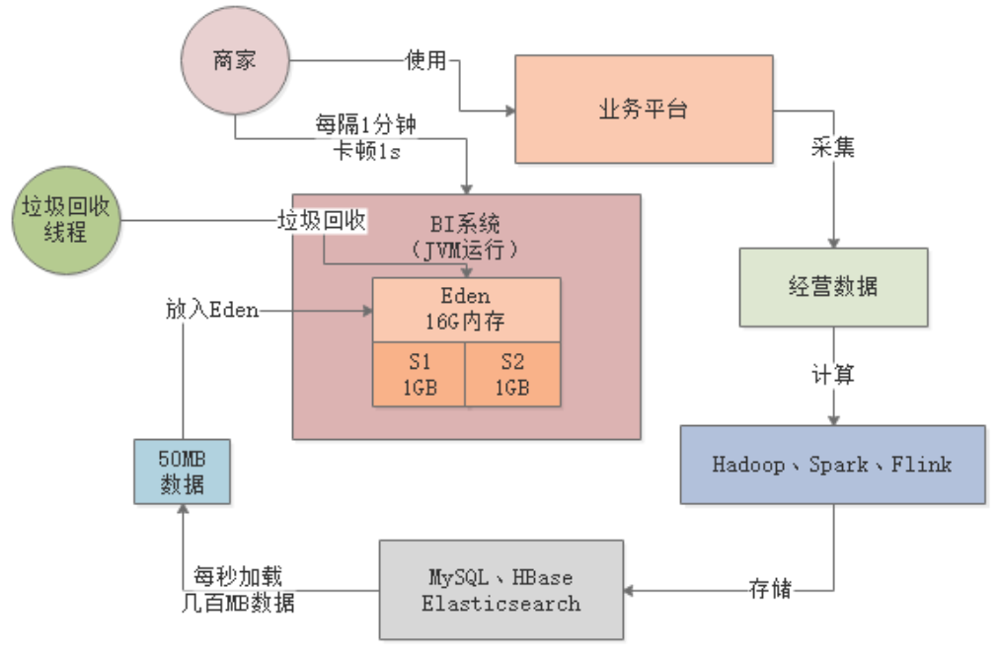

JVM实战（14）——Young GC调优
一、简介
本章，我们还是以案例驱动的方式讲解Young GC调优，之前在基础篇中，我们曾通过一个亿级访问量的的电商系统讲解过新生代调优。新生代调优最简单的思路就是扩Survivor区，本章示例的调优思路也是一脉相承。
1.1 案例背景
假设生产环境有一个商户BI系统，用于商户日常经营数据的分析和报表输出，其大致运行逻辑如下：
- 商户会在业务平台上进行运营，产生各种各样的业务数据；
- Hadoop、Spark等会对这些业务数据进行计算，然后放入MySQL、HBase之类的存储中；
- 最后，我们的BI系统会把各种存储好的数据暴露给前端，允许前端基于各种搜索条件筛选和展示。

系统刚上线时，商户数量只有几万家，生产机器配置是4核8G，新生代分配1.5G，Eden区有1G：

1.2 内存使用模型估算
每个商户的主页，前端每隔几秒钟就会发送一个请求给BI系统，用于生成一种实时报表。每台机器差不多每秒抗500个请求，由于报表需要的数据量比较大，一般每个请求需要加载约100KB的数据到内存中，每秒500个请求总共就是50MB数据，每次Young GC过后存活对象也就几十MB：

二、Young GC调优
根据上述内存使用模型的估算，每秒需加载50MB数据到Eden区，那3分钟左右就会将Eden区占满，触发Young GC。在1G的内存空间中进行Young GC的效率是很高的，基本上10ms左右就可以搞定，所以BI系统每运行几分钟就会出现10ms左右的卡顿，但是对终端用户和系统运行基本没有影响：

2.1 采用大内存
针对这样的业务场景，几万商户数量级基本没有什么影响，但是当商户数量达到百万级以上就会出现问题。所以，最简单的优化思路就是提升机器配置，比如采用16核32G的机器，这样每台机器可以抗几千个请求，部署20~30台就差不多了。
32G内存的机器，新生代分配20G，其中Eden区占16G。此时每秒几千请求的话，大概每秒会加载几百MB数据到Eden区，最多1分钟就会填满Eden区。
此时，Young GC从原来只需回收1G的内存变成了回收16G，速度会慢很多，从商户的体验上看就是每隔1分钟，系统就要卡1s左右：

卡顿时间过长，会导致大量请求排队，严重时导致系统时不时就出现请求超时的现象。
2.2 采用G1
既然是大内存的机器，其实采用G1才是正确的思路。对G1设置一个合理的预期停顿时间，比如100ms，让G1保证每次Young GC的时候最多停顿100ms，避免影响终端用户的使用。
三、总结
本文通过一个示例讲解了Young GC的基本优化思路，在系统内存不是很大的情况下，可以通过提升Eden和Survivor的空间，来容纳更多的新生代对象。但是，当新生代的内存空间太大时，需要考虑每次Young GC的时间成本，传统的ParNew回收器不太适合这种大内存场景，所以针对大内存机器建议使用G1进行垃圾回收。
另外，通过本文示例也可以看到，即使Young GC频繁些，但是只要保证每次GC时间很短（控制在几十毫秒内），对系统基本不会有什么影响。